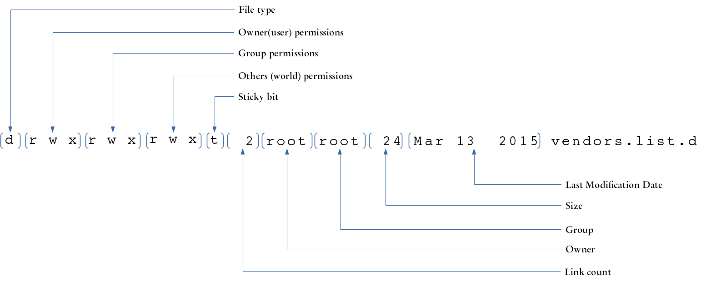

In this lab we will:
Utilities that will be utilized in this Lab:
ls, cd, less, cat, touch, chmod, id, umask, mkdir, ln, echo and redirection.
Linux supports several methods of controlling access to files an directories. In this lab we are going to learn the traditional access control model that is based on the concepts of file ownership and permissions. In this model, access is granted based on the concepts of users and groups. A user is an individual access account, and they can belong to one or more groups, and they can own files. When user accounts are created, they are assigned a username and a user id (or uid), and also a primary group which defaults to the same as the user id.
To find out your uid and the groups that your account is associated with, use the id command:
[jmora@blue ~]$ id uid=1234(jmora) gid=1234(jmora) groups=1234(jmora)
User account information is stored in the /etc/passwd file. Each line on this file corresponds to a user record, which contains 7 fields separated by a colon (:):
/etc/shadow.Users and Groups
/etc/passwd file with the command less /etc/password, and locate the apache account (Hint: use the search feature of less to find your account). What are the apache account’s uid and home directory?/etc/group file. How many users are associated with the apache group?Every file in a Unix system is owned by a user and it is also associated with a group. Access to files can be specified based on:
There are three types of permissions that can be granted or revoked for a file: Read, Write and Execute. These permission types have a different meaning depending of the file type:
| Access Type | Regular Files | Directories |
|---|---|---|
| read | Read the contents of the file | List the contents of a directory |
| write | Modify the contents of a file | Create or remove files in the directory |
| execute | Run a file as a program | Set the directory as working directory / copy files from the directory (sticky bit restrictions apply) |
The easiest way to inspect a file’s ownership and permission attributes is by running the ls command with the long listing option that you learned in the previous Lab (ls -l):
[jmora@blue ~]$ ls -l /etc/apt total 12 -rw-r--r--. 1 root root 541 Mar 13 2015 apt.conf drwxr-xr-x. 2 root root 63 Oct 21 2015 apt.conf.d -rw-r--r--. 1 root root 0 Mar 13 2015 preferences -rw-r--r--. 1 root root 233 Mar 13 2015 rpmpriorities -rw-r--r--. 1 root root 48 Mar 13 2015 sources.list drwxr-xr-x. 2 root root 74 Mar 13 2015 sources.list.d -rw-r--r--. 1 root root 0 Mar 13 2015 vendors.list drwxr-xr-x. 2 root root 24 Mar 13 2015 vendors.list.d
The leftmost field of each line contains the following file attributes:
| Attribute | File Type |
|---|---|
| - | Regular File |
| d | Directory |
| l | Symbolic link |
| s | Socket |
| p | Pipe |
| c | Character device file |
| b | Block file |
File permission attributes are granted through the chmod (“change file mode”) command. There are two ways of specifying file permissions: octal and symbolic representation.
The following table shows the octal representation of the different permission modes:
| Octal | Binary | Mode |
|---|---|---|
| 0 | 000 | — |
| 1 | 001 | –x |
| 2 | 010 | -w- |
| 3 | 011 | -wx |
| 4 | 100 | r– |
| 5 | 101 | r-x |
| 6 | 110 | rw- |
| 7 | 111 | rwx |
When setting the mode for a file using the octal notation, we need to specify the mode for the owner, group and others; we can not just specify a value for only one of those permission classes.
Try creating a file called file_one and observe how the permission attributes change with the chmod command
[jmora@blue ~]$ touch file_one [jmora@blue ~]$ ls -l total 8 -rw------- 1 jmora jmora 0 Feb 2 23:02 file_one drwxr--r-- 5 jmora jmora 4096 Feb 2 10:58 lab02 drwx--x--x 2 jmora jmora 4096 Jan 27 2016 public_html [jmora@blue ~]$ chmod 755 file_one [jmora@blue ~]$ ls -l total 8 -rwxr-xr-x 1 jmora jmora 0 Feb 2 23:02 file_one drwxr--r-- 5 jmora jmora 4096 Feb 2 10:58 lab02 drwx--x--x 2 jmora jmora 4096 Jan 27 2016 public_html
With the symbolic notation we do not have to specify all the permission classes.
Instead, we used the symbols u for owner(user), g for owner, o for others and a for all (that is, to apply the same change to all u, g and o at the same time), and then the + character to indicate the grant of one or more of the permissions (r,w or x), the - character to revoke a permission, or the = character to set the permissions as stated (adds the passed permissions and removes the ommitted ones).
The following example creates a file called file_two and uses symbolic notation to apply the same changes we made earlier using octal notation:
[jmora@blue ~]$ touch file_two [jmora@blue ~]$ ls -l total 8 -rwxr-xr-x 1 jmora jmora 0 Feb 2 23:02 file_one -rw------- 1 jmora jmora 0 Feb 2 00:40 file_two drwxr--r-- 5 jmora jmora 4096 Feb 2 10:58 lab02 drwx--x--x 2 jmora jmora 4096 Jan 27 2016 public_html [jmora@blue ~]$ chmod u+x,g+rx,o+rx file_two [jmora@blue ~]$ ls -l total 8 -rwxr-xr-x 1 jmora jmora 0 Feb 2 23:02 file_one -rwxr-xr-x 1 jmora jmora 0 Feb 2 00:40 file_two drwxr--r-- 5 jmora jmora 4096 Feb 2 10:58 lab02 drwx--x--x 2 jmora jmora 4096 Jan 27 2016 public_html
Here’s the same operation but using the = operation
[jmora@blue ~]$ touch file_three [jmora@blue ~]$ ls -l total 8 -rwxr-xr-x 1 jmora jmora 0 Feb 2 23:02 file_one -rw------- 1 jmora jmora 0 Feb 2 00:56 file_three -rwxr-xr-x 1 jmora jmora 0 Feb 2 00:40 file_two drwxr--r-- 5 jmora jmora 4096 Feb 2 10:58 lab02 drwx--x--x 2 jmora jmora 4096 Jan 27 2016 public_html [jmora@blue ~]$ chmod u=rwx,go=rx file_three [jmora@blue ~]$ ls -l total 8 -rwxr-xr-x 1 jmora jmora 0 Feb 2 23:02 file_one -rwxr-xr-x 1 jmora jmora 0 Feb 2 00:56 file_three -rwxr-xr-x 1 jmora jmora 0 Feb 2 00:40 file_two drwxr--r-- 5 jmora jmora 4096 Feb 2 10:58 lab02 drwx--x--x 2 jmora jmora 4096 Jan 27 2016 public_html
chmod
newfile. What are the permissions of this file?chmod command that will make the file transition through the permissions indicated in the column Attributes, or by providing the Attributes that would result from running the chmod command if specified. This means that the comands are run sequentially (i.e. for row n you need to call chmod so the file transtions from the attributes in row n-1 to the attributes in row n).| Attributes | Notation | chmod command |
|---|---|---|
-rwx------ |
symbolic | |
-r-x------ |
octal | |
-rwxr--r-- |
symbolic | |
| octal | chmod 755 newfile | |
-rwxrw---- |
symbolic | |
-r-xr--r-x |
octal | |
| symbolic | chmod ug+w,o=r newfile |
Note
In the next section of lab we are going to be modifying file permissions, and the best way to verify if these work is by having another user that can help you validate your settings. It is highly recommended to work with the person beside you.
permissions in practice
Run the command umask 077
Make sure your home directory has execute access enabled for group and other. You can verify this by running the ls -ld ~ command:
[you@blue yourhome]$ ls -ld ~ drwx--x--x 7 you you 4096 Feb 2 09:04 /home/student/you
Change to your home directory, and create a directory called lab03.
lab03 has execute access enabled for group and other. What command do you need to run to enable that access (without enable read and write to group and other)?Change into lab03 and run the following commands:
mkdir dir1 dir2 dir3 dir4
echo -e '#!/bin/bash\necho "Hello Linux"' > torvalds.sh
echo -e '#!/bin/bash\necho "Hello Ruby"' > dir1/matz.sh
echo -e '#!/bin/bash\necho "Hello Python"' > dir2/vanrossum.sh
echo -e '#!/bin/bash\necho "Hello Java"' > dir3/gosling.sh
echo -e '#!/bin/bash\necho "Hello C++"' > dir3/stroustrup.sh
echo -e '#!/bin/bash\necho "Hello GNU"' > dir4/stallman.sh
(Congratulations, you just created your first shell scripts!)
torvalds.sh scriptdir1/matz.sh scriptdir2/vanrossum.sh scriptdir4dir3, and other users cannot list the contents of dir3 and can read the contents of the files contained within without being able to modify those files, and only the file called gosling.sh can be executed by others?Symbolic links (also known as symlinks) are pointers to other files. As we saw earlier, they can be identified by showing a file type of l in the long format output of the ls command.
In the following example a file called file_a is created, and then a symbolic link file_b that points to file_a is created as well:
[jmora@blue ~]$ ls -l total 12 drwxr--r-- 5 jmora jmora 4096 Feb 2 10:58 lab02 drwx--x--x 2 jmora jmora 4096 Jan 27 2016 public_html -rw------- 1 jmora jmora 7 Feb 2 01:21 tst.txt [jmora@blue ~]$ touch file_a [jmora@blue ~]$ ln -s file_a file_b [jmora@blue ~]$ ls -l total 12 -rw------- 1 jmora jmora 0 Feb 2 02:30 file_a lrwxrwxrwx 1 jmora jmora 6 Feb 2 02:30 file_b -> file_a drwxr--r-- 5 jmora jmora 4096 Feb 2 10:58 lab02 drwx--x--x 2 jmora jmora 4096 Jan 27 2016 public_html -rw------- 1 jmora jmora 7 Feb 2 01:21 tst.txt
symlinks
symlorem.txt that points to lorem.txt by running the command ln -s lorem.txt symlorem.txt. What are the permission attributes for this file?symlorem.txt and lorem.txt? Research on the web about changing permissions on symlinks and explain what just happened.symlorem.txt file with your favorite text editor, and remove the word consectetur. Save and exit the editor. Now, inspect the contents of the file lorem.txt. Did this file change?quotes and move the file lorem.txt into it. After doing this, can you still read symlorem.txt?lorem.txt back to your home directory. Now move symlorem.txt into quotes. Can you read symlorem.txt?.absolutelorem.txt into quotes. Can you read absolutelorem.txt?